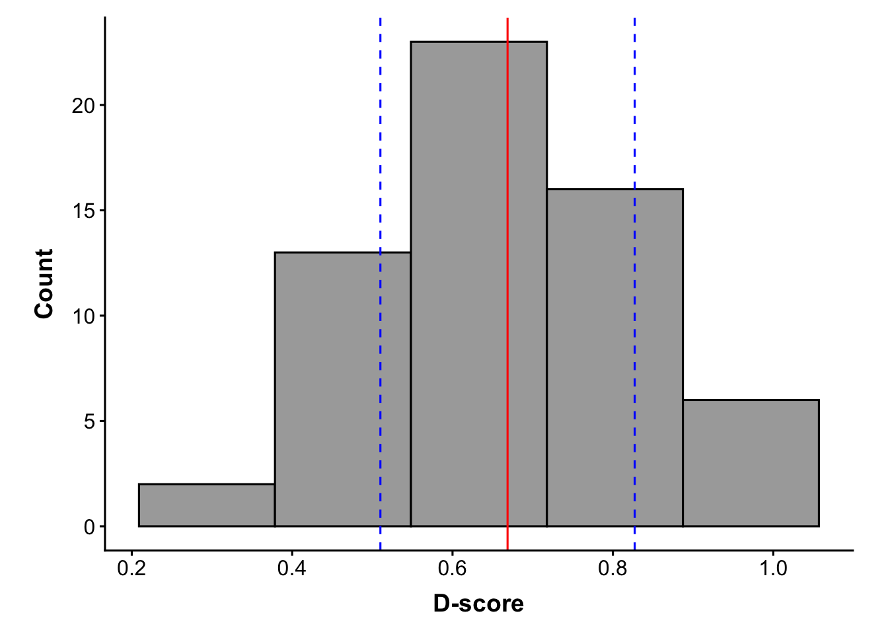
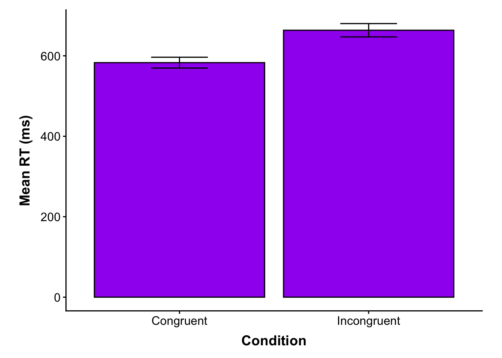
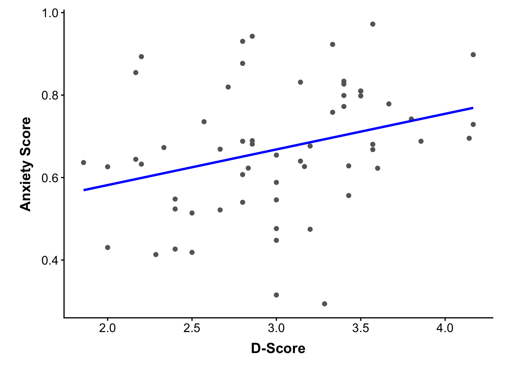

ensure_dir <- function(path) if (!dir.exists(path)) dir.create(path, recursive = TRUE, showWarnings = FALSE)
ensure_dir(file.path(here::here("data","raw")))
ensure_dir(file.path(here::here("data","cleaned")))
ensure_dir(file.path(here::here("outputs","tables")))
ensure_dir(file.path(here::here("outputs","plots")))Project 2 — IAT Data Analysis Pipeline
Workflow Overview
At the individual level, each participant’s raw .csv file is processed by import_and_process.R. This script extracts the subject ID, checks that required columns are present, and then hands off the data to separate helper scripts:
score_questionnaire.Rparses the JSON questionnaire response and returns a single anxiety score.summarize_behavior.Rcleans and organizes the IAT trials, computes mean reaction times and accuracy for congruent and incongruent blocks, and callscalculate_iat_dscore.Rto compute the participant’s D-score.
These behavioral values and the questionnaire score are combined into a one-row summary and saved to data/cleaned/participants/.
At the study level, build_participant_wide.R loops through all raw participant files, runs each through import_and_process(), and stacks the results into one data frame that represents the full sample. The Quarto report (project2.qmd) runs all functions, performs sanity checks, computes study-level summaries and basic inferential statistics, and produces the final visualizations.
Setup Directories
We start by ensuring all of our directories are created to organize our output.
Libraries
Load all relevant package libraries using pacman.
if (!require("pacman")) {
install.packages("pacman"); library(pacman, quietly = TRUE)
}Loading required package: pacmanp_load("ggplot2", "here", "jsonlite")Load helpers
Source all scripts for use.
source(here::here("scripts/calculate_iat_dscore.R"))
source(here::here("scripts/score_questionnaire.R"))
source(here::here("scripts/summarize_behavior.R"))
source(here::here("scripts/import_and_process.R"))
source(here::here("scripts/build_participant_wide.R"))Build participant-wide table
Process all 60 participants and create study-level data frame.
participant_wide <- build_participant_wide()Warning in FUN(X[[i]], ...): Column 'trial_type' found in
sub-006_P1P2_INCONGfirst -- renaming to 'trialType'.Warning in FUN(X[[i]], ...): Column 'expectedCategoryDisplayed' found in
sub-012_P1P2_CONGfirst -- renaming to 'expectedCategoryAsDisplayed'.nrow(participant_wide)[1] 60head(participant_wide, 6) subject_id anxiety_score congruent_mean incongruent_mean congruent_accuracy
1 sub-001 2.200000 595.2713 668.6225 0.9375000
2 sub-002 2.833333 573.3900 647.4539 0.9344262
3 sub-003 3.333333 583.4995 695.0193 0.9843750
4 sub-004 3.428571 576.2116 653.1381 0.9687500
5 sub-005 2.666667 600.8950 666.2093 0.9032258
6 sub-006 3.600000 591.9982 669.6874 0.9841270
incongruent_accuracy d_score
1 0.8387097 0.6325243
2 0.9047619 0.6228413
3 0.9047619 0.9229071
4 0.9508197 0.6283258
5 0.8750000 0.5214611
6 0.9206349 0.6226211tail(participant_wide, 6) subject_id anxiety_score congruent_mean incongruent_mean congruent_accuracy
55 sub-055 2.857143 564.7754 689.3586 0.9531250
56 sub-056 2.500000 566.3500 628.8491 0.9841270
57 sub-057 3.500000 564.9090 667.5173 0.9531250
58 sub-058 3.333333 582.9957 669.7549 1.0000000
59 sub-059 3.666667 573.3275 664.3129 0.9032258
60 sub-060 3.000000 588.3714 668.9160 0.9516129
incongruent_accuracy d_score
55 0.9666667 0.9426487
56 0.9062500 0.5139744
57 0.8870968 0.7980213
58 0.9193548 0.7583011
59 0.8593750 0.7786202
60 0.8730159 0.6544074Sanity checks
(there are no errors in this section; these sanity checks are designed to help you find errors elsewhere in the code (which you may or may not have already fixed))
Check for missing values in key summary measures
cols <- c("congruent_mean", "incongruent_mean",
"congruent_accuracy", "incongruent_accuracy",
"d_score", "anxiety_score")
participant_wide[, cols] |>
is.na() |>
colSums() |>
(\(x) {
data.frame(
variable = names(x),
n_missing = unname(x),
expected = 0
)
})() |>
print() variable n_missing expected
1 congruent_mean 0 0
2 incongruent_mean 0 0
3 congruent_accuracy 0 0
4 incongruent_accuracy 0 0
5 d_score 0 0
6 anxiety_score 0 0The table above shows the number of missing values for each study-level variable. The expected column indicates the target of 0 missing values for each variable.
There are a total of 60 raw participant files, and a total of 60 participants included in participant_wide. These values are equal length.
All subject IDs are unique.
The range of congruent reaction times is 550.5 - 607.8 ms. (Expected: 550.5 - 607.8 ms)
The range of incongruent reaction times is 628.8 - 709.9 ms. (Expected: 628.8 - 709.9 ms)
The range of congruent accuracy is 0.9 - 1. (Expected: 0.9 - 1)
The range of incongruent accuracy is 0.7 - 1. (Expected: 0.7 - 1)
The current participant_wide data frame has 60 rows and 7 columns. (Expected: 60 rows and 7 columns)
Calculate and Report Study Means
Calculate overall means and standard deviations for each variable.
cols <- c("congruent_mean",
"incongruent_mean",
"congruent_accuracy",
"incongruent_accuracy",
"d_score",
"anxiety_score")
df_vals <- participant_wide[, cols]
## Calculate Means for all measures
means <- colMeans(df_vals, na.rm = TRUE)
## Calculate Standard Deviations for all measures
sds <- apply(df_vals, 2, sd, na.rm = TRUE)
## Calculate Standard Errors for all measures
ses <- apply(
df_vals,
2,
function(x) sd(x, na.rm = TRUE) / sqrt(sum(!is.na(x)))
)Calculate test statistics (there are no errors in this section)
## RT paired t-test
rt_ttest <- t.test(participant_wide$congruent_mean,
participant_wide$incongruent_mean,
paired = TRUE)
## Accuracy paired t-test
acc_ttest <- t.test(participant_wide$congruent_accuracy,
participant_wide$incongruent_accuracy,
paired = TRUE)
## Correlation between d-score and anxiety score
d_anx_cor <- cor(participant_wide$d_score,
participant_wide$anxiety_score,
use = "complete.obs")
d_anx_test <- cor.test(participant_wide$d_score,
participant_wide$anxiety_score)Congruent reaction times were 583.04 ± 13.49 ms. (Expected: 583.04 ± 13.49 ms.)
Incongruent reaction times were 663.58 ± 16.55 ms. (Expected: 663.58 ± 16.55 ms.)
The congruent vs incongruent RT difference (-80.53 ms) was statistically significant, p = 2.25^{-37}. This means that congruent RTs were faster than incongruent RTs.
Congruent accuracy was 95.3 ± 2.58%. (Expected: 95.3 ± 2.58%)
Incongruent accuracy was 87.93 ± 4.6%. (Expected: 87.93 ± 4.6%)
The congruent vs incongruent accuracy difference (7.37%) was statistically significant, p = 7.22^{-16}. This means that congruent trials were 7.37% more accurate than incongruent trials.
The average D-score was 0.67 ± 0.16, indicating a positive (congruent-faster) implicit association, meaning on average people associate nature with serenity and math with anxiety. This bias (r = 0.31) was correlated with participants’ anxiety scores (p = 0.017).
Visuals (base R)
Plot basic visuals of our data.
if (sum(is.finite(participant_wide$d_score)) > 0) {
d_mean <- mean(participant_wide$d_score, na.rm = TRUE)
d_sd <- sd(participant_wide$d_score, na.rm = TRUE)
hist(
participant_wide$d_score,
breaks = 5,
main = "Distribution of IAT D-scores",
xlab = "D-score",
ylab = "Count",
col = "lightgray",
border = "white"
)
## Add mean line
abline(v = d_mean, col = "blue", lwd = 2)
## Add ±1 SD lines
abline(v = d_mean + d_sd, col = "red", lwd = 2, lty = 2)
abline(v = d_mean - d_sd, col = "red", lwd = 2, lty = 2)
}
Figure. Histogram of D-scores with mean (blue line) and ±1 SD (red dashed lines). Positive values reflect faster responding in the congruent condition. The mean D-score was 0.67.
bar_vals <- c(means["congruent_mean"], means["incongruent_mean"])
sd_vals <- c(sds["congruent_mean"], sds["incongruent_mean"])
## Create the bar plot
bp <- barplot(
bar_vals,
names.arg = c("Congruent", "Incongruent"),
col = c("gray70", "gray40"),
ylab = "Mean RT (ms)",
ylim = c(0, max(bar_vals + sd_vals) * 1.1)
)
## Add error bars
arrows(
x0 = bp, y0 = bar_vals - sd_vals,
x1 = bp, y1 = bar_vals + sd_vals,
angle = 90, code = 3, length = 0.05, lwd = 2
)
Figure. Mean reaction times for congruent and incongruent trials. Errors represent standard errors (mean ± SD). Congruent trials averaged 583.04 ± 13.49 ms, and incongruent trials averaged 663.58 ± 16.55 ms. As expected, congruent trials were faster than incongruent trials, with an average difference of 80.53 ms.
## Extract values
d_vals <- participant_wide$d_score
anx_vals <- participant_wide$anxiety_score
## Calculate correlation
d_anx_cor <- cor(d_vals, anx_vals, use = "complete.obs")
## Plot
plot(d_vals, anx_vals,
main = "Correlation Between D-score and Anxiety",
xlab = "D-score",
ylab = "Anxiety Score",
pch = 19, col = "gray40")
## Add regression line
abline(lm(anx_vals ~ d_vals), col = "blue", lwd = 2)
## Add correlation label on the plot
text(x = min(d_vals, na.rm = TRUE),
y = max(anx_vals, na.rm = TRUE),
labels = paste("r =", round(d_anx_cor, 2)),
pos = 4)
Figure. Scatterplot showing the relationship between D-scores and anxiety scores. Each point represents one participant, with the blue line showing the best-fit regression line. The observed correlation was 0.31.
Advanced Visuals (ggplot2)
Your Task: Recreate the above base R plots with ggplot2. Improve the overall aesthetic (axes, labels/titles, color, etc.) using a custom theme. Don’t forget to save your plots.
## TODO: Use ggplot2 to re-create:
## (1) histogram of D-scores and
## (2) bar plot of mean RTs. Include standard error bars.
## (3) correlation between anxiety score and d-scores, with regression line
## Improve the overall aesthetic (axes, labels/titles, color, etc.) using a custom theme.
## Use fig-cap to provide captions for each figure.
## You will want to assign each plot to a variable for later saving (e.g., barplot <- ggplot...)
## To display each plot in your rendered Quarto Report, use print()## Create ggplot custom theme
theme_di <- function(base_size = 12) {
theme_classic(base_size = base_size) +
theme(
plot.title = element_text(size = base_size + 4, face = "bold", hjust = 0.5),
axis.title = element_text(size = base_size + 2, face = "bold"),
axis.text = element_text(size = base_size),
axis.title.x = element_text(margin = margin(t = 8)),
axis.title.y = element_text(margin = margin(r = 8)),
legend.position = "bottom",
legend.title = element_text(size = base_size),
legend.text = element_text(size = base_size - 1),
plot.margin = margin(10, 20, 10, 20)
)
}## Histogram with Mean and SD
#| label: fig-rt-d-scores
#| fig-cap: "Histogram of overall d-scores times with reference lines showing the mean and one standard deviation."
## Histogram with reference lines
dscore_histogram <- ggplot(participant_wide, aes(x = d_score)) +
geom_histogram(bins = 5,
fill = "darkgray",
color = "black") +
geom_vline(xintercept = d_mean, color = "red") +
geom_vline(xintercept = d_mean - d_sd, color = "blue", linetype = "dashed") +
geom_vline(xintercept = d_mean + d_sd, color = "blue", linetype = "dashed") +
labs(x = "D-score", y = "Count") + theme_di()
print(dscore_histogram)
## Bar Plot of mean RTs.
## Create data frame for plot
rt_bar_df <- data.frame (
condition = c("Congruent", "Incongruent"),
rt_mean = bar_vals,
rt_sd = sd_vals
)
#| label: fig-bar-rt
#| fig-cap: "Mean overall reaction time by condition."
## Bar plot w/ error bars
rt_barplot <- ggplot(rt_bar_df, aes(x = condition, y = rt_mean)) +
geom_col(fill = "purple",
color = "black") +
labs(x = "Condition", y = "Mean RT (ms)") + geom_errorbar(aes(ymin = rt_mean - rt_sd,
ymax = rt_mean + rt_sd), width = 0.3) +
theme_di()
print(rt_barplot)
## Scatterplot w/ regression line
#| label: fig-scatter-line
#| fig-cap: "Scatterplot with a fitted regression line showing the relationship between D-scores and anxiety scores."
## Scatterplot + regression line
d_anx_scatter <- ggplot(participant_wide, aes(x = anx_vals, y = d_vals)) +
geom_point(color = "gray40") +
geom_smooth(method = "lm", se = FALSE, color = "blue") +
labs(x = "D-Score",
y = "Anxiety Score") +
theme_di()
print(d_anx_scatter)`geom_smooth()` using formula = 'y ~ x'
Export outputs
Save all generated files and base plots.
Save study-level files
## Save participant_wide data frame
write.csv(participant_wide, here::here("outputs", "tables", "participant_wide.csv"), row.names = FALSE)
"Saved base outputs. Check output/plots and output/tables for correct files."[1] "Saved base outputs. Check output/plots and output/tables for correct files."Save ggplots plots.
## Remember that the plots do **not** save automatically. Use `ggplot2::ggsave()` to save each plot, for example:
## ggsave("my_plot.png", my_plot_object, path = here::here("outputs", "plots"))
ggsave("D-score Histogram.png", dscore_histogram, path = here::here("outputs", "plots"))Saving 7 x 5 in imageggsave("RT Barplot.png", rt_barplot, path = here::here("outputs", "plots"))Saving 7 x 5 in imageggsave("D-score & Anxiety Scatter Plot.png", d_anx_scatter, path = here::here("outputs", "plots"))Saving 7 x 5 in image
`geom_smooth()` using formula = 'y ~ x'"Saved ggplot outputs."[1] "Saved ggplot outputs."